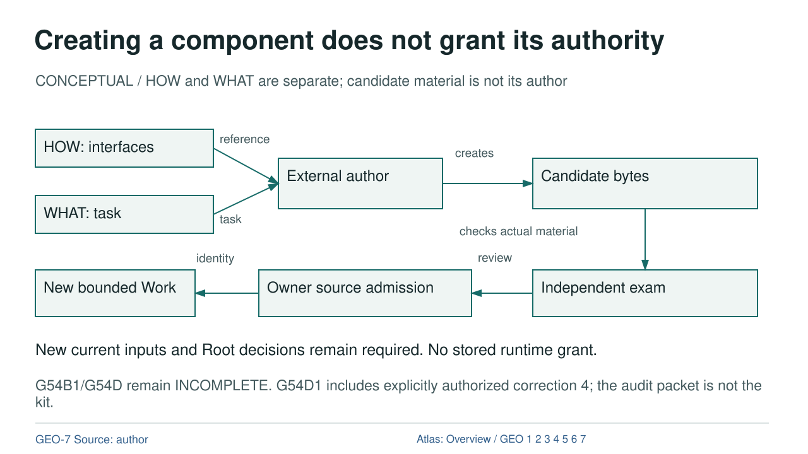

Creating a component does not grant its authority

Diagram text equivalent
- Creating a component does not grant its authority
- CONCEPTUAL / HOW and WHAT are separate; candidate material is not its author
- KIT: HOW: interfaces
- HOW: interfaces
- WHAT: WHAT: task
- WHAT: task
- AUTHOR: External author
- External author
- CANDIDATE: Candidate bytes
- Candidate bytes
- DATA: reference
- reference
- DATA: task
- task
- DATA: creates
- creates
- EXAMINER: Independent exam
- Independent exam
- SOURCE_ADMISSION: Owner source admission
- Owner source admission
- WORK: New bounded Work
- New bounded Work
- DATA: checks actual material
- checks actual material
- DATA: review
- review
- DATA: identity
- identity
- New current inputs and Root decisions remain required. No stored runtime grant.
- G54B1/G54D remain INCOMPLETE. G54D1 includes explicitly authorized correction 4; the audit packet is not the kit.
- rule
- GEO-7 Source: author
- Atlas: Overview / GEO 1 2 3 4 5 6 7
CONCEPTUAL / HOW and WHAT are separate; candidate material is not its author
Text Equivalent
Creating a component does not grant its authority
CONCEPTUAL / HOW and WHAT are separate; candidate material is not its author
HOW: interfaces
WHAT: task
External author
Candidate bytes
reference
task
creates
Independent exam
Owner source admission
New bounded Work
checks actual material
review
identity
New current inputs and Root decisions remain required. No stored runtime grant.
G54B1/G54D remain INCOMPLETE. G54D1 includes explicitly authorized correction 4; the audit packet is not the kit.
GEO-7 Source: author
Atlas: Overview / GEO 1 2 3 4 5 6 7
Exact Relations
- KIT to AUTHOR: DATA, reference.
- WHAT to AUTHOR: DATA, task.
- AUTHOR to CANDIDATE: DATA, creates.
- CANDIDATE to EXAMINER: DATA, checks actual material.
- EXAMINER to SOURCE_ADMISSION: DATA, review.
- SOURCE_ADMISSION to WORK: DATA, identity.